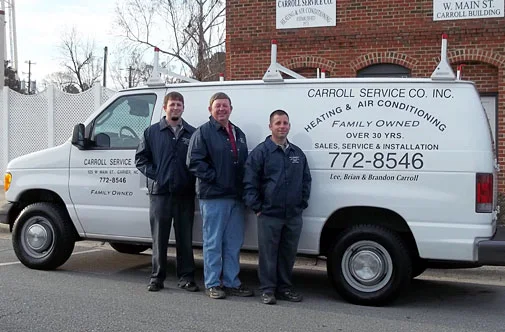
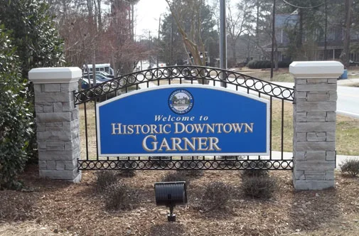

Home / The family
Our company
Garner, 1973. Garner, today.
Carroll Service Company originated in Garner, NC in 1973. It is family owned and operated, and has been part of the community for over 50 years.

Fifty three years in four lines
- 1973Carroll Service Company starts in Garner.
- Over 50 yearsFamily owned and operated the whole way, now by Lee Carroll and his family.
- 202540 permitted HVAC projects on the public record, the busiest year since at least 2023.
- TodayOffice at 125 W. Main Street. Same phone number as the van.
Placeholder: who founded it, the first shop, and the story behind the Main Street office. The live site gives the year and nothing else.
Names customers mention
- Lee CarrollOwner. Came out for the estimate in one testimonial.
- Brian CarrollOwner on state records. Ran the install crew in one testimonial.
- Brandon CarrollFamily. Named on the van, the logo and the Our Company page.
- Dennis“Always so kind on the phone.”
- Nicole“Always cheerful.”
- RodneyTechnician, named in two reviews.
- JohnFixed a no heat call on a cold weekend.
Roles come from reviews, the site and BuildZoom. TODO-VERIFY titles and spellings with Lee before launch.
